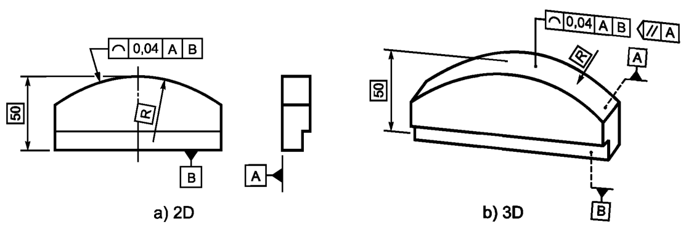

Выявленная линия на нормируемой поверхности в любой плоскости, параллельной плоскости проекции, на которой указан допуск, см. рисунок (a) ниже, или параллельной базовой плоскости А, см. рисунок (b) ниже, должна располагаться между двумя эквидистантными линиями, являющимися огибающими семейства окружностей диаметром 0,04, центры которых расположены на заданном относительно базовых плоскостей А и В номинальном профиле.
Поле допуска ограничено двумя линиями, являющимися огибающими семейства окружностей, с диаметрами, равными значению допуска t, и центрами, расположенными на заданном относительно базовых плоскостей А и В номинальном профиле, см. рисунок ниже
а - база А; b - база В; с - плоскость, параллельная базе А